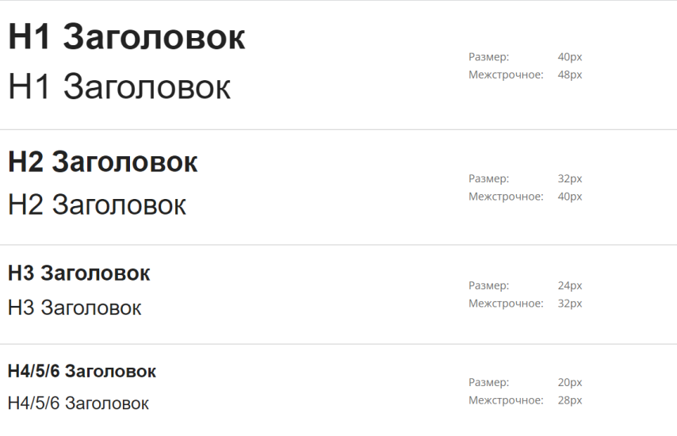

ФИРМЕННЫЙ СТИЛЬ
Типографика
Шрифты
В веб-проектах используем фирменный шрифт Montserrat для заголовков и
текстов. Для логотипа используется шрифт Randrake.
Основные принципы использования типографики
В основных текстовых элементах интерфейса следует руководствоваться гайдом и ГОСТ
Р 52872-2012.
Текст должен быть выровнен по левому краю или центру. Выравнивать текст по ширине
нельзя.
Допустимое количество знаков с пробелами в одной строке — 50-80.
Межстрочный интервал внутри абзаца должен быть не менее 1,5. Если надпись
короткая, то интерлиньяж может быть равен 100%.
Интервал между абзацами — не меньше межстрочного в 1,5 раза.
Заголовки
Шрифт Montserrat предназначен для использования в заголовках во всех
веб-проектах платформы. Используется в двух начертаниях: SemiBold и Bold. Ниже представлена таблица
стилей для данного шрифта.

Оформление текста и ссылок
Шрифт Montserrat предназначен для использования в текстах во всех
веб-проектах платформы. Используется в начертании Regular. Ниже представлена таблица стилей для данного
шрифта по использования для текста, ссылок и списков.


Отступы
Дизайн-системой предусмотрена система отступов между текстом и заголовками.
После заголовка отступ равен 16 px, перед заголовков - 24 px. Между текстом и изображением отступ равен
24 px. Ниже представлена таблица стилей по использованию отступов в рамках дизайн-системы.